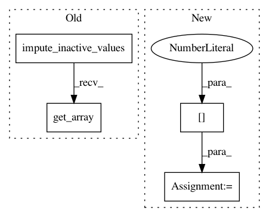

07c832db5af2deb9901d0f58b1c653961dec94d7,smac/runhistory/runhistory2epm.py,RunHistory2EPM4EIPS,_build_matrix,#RunHistory2EPM4EIPS#Any#Any#Any#Any#,398
Before Change
for row, (key, run) in enumerate(run_dict.items()):
// Scaling is automatically done in configSpace
conf = runhistory.ids_config[key.config_id]
conf = impute_inactive_values(conf)
if self.n_feats:
feats = self.instance_features[key.instance_id]
X[row, :] = np.hstack((conf.get_array(), feats))
else:
X[row, :] = conf.get_array()
// run_array[row, -1] = instances[row]
After Change
for row, (key, run) in enumerate(run_dict.items()):
// Scaling is automatically done in configSpace
conf = runhistory.ids_config[key.config_id]
conf_vector = convert_configurations_to_array([conf])[0]
if self.n_feats:
feats = self.instance_features[key.instance_id]
X[row, :] = np.hstack((conf_vector, feats))
else:
In pattern: SUPERPATTERN
Frequency: 3
Non-data size: 4
Instances
Project Name: automl/SMAC3
Commit Name: 07c832db5af2deb9901d0f58b1c653961dec94d7
Time: 2017-04-05
Author: jorntuyls@Jorns-MacBook-Pro-3.local
File Name: smac/runhistory/runhistory2epm.py
Class Name: RunHistory2EPM4EIPS
Method Name: _build_matrix
Project Name: automl/SMAC3
Commit Name: 832d83e955b066e0ad95868a24f0a089e0cc3e0c
Time: 2015-12-16
Author: lindauer@informatik.uni-freiburg.de
File Name: smac/runhistory/runhistory2epm.py
Class Name: RunHistory2EPM
Method Name: transform
Project Name: automl/SMAC3
Commit Name: 3f37e01baf6929e39ca7bedfcd27915783380e8a
Time: 2017-02-13
Author: feurerm@informatik.uni-freiburg.de
File Name: smac/runhistory/runhistory2epm.py
Class Name: RunHistory2EPM4Cost
Method Name: _build_matrix